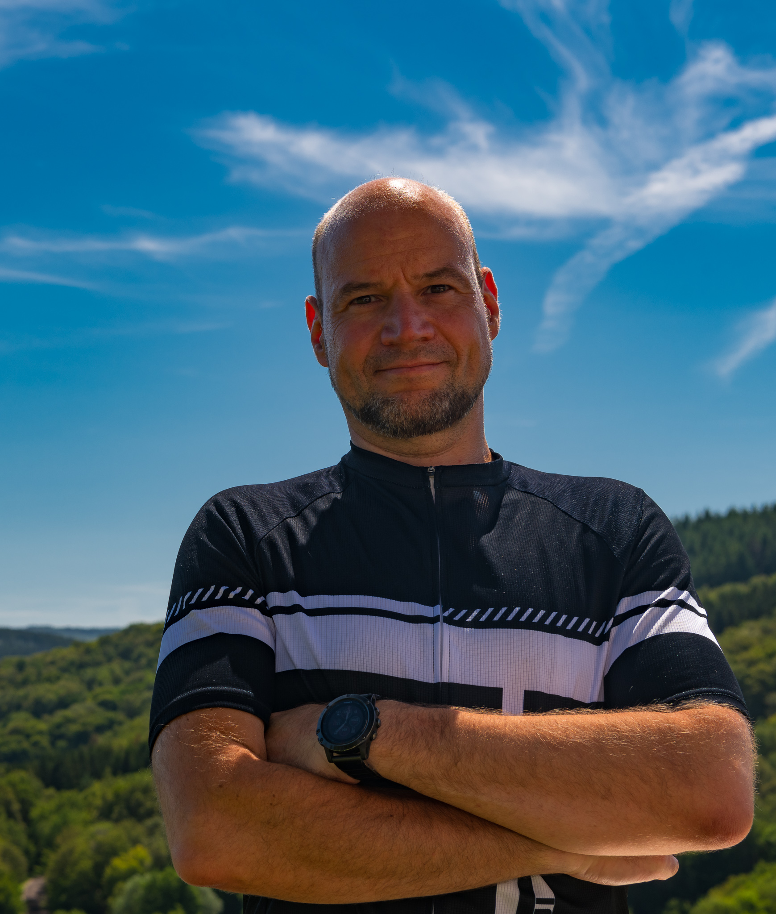

Welcome

I am a Full Professor of Machine Learning for Complex Networks at the Center for Artificial Intelligence and Data Science of Julius-Maximilians-Universität Würzburg.
My research addresses open questions at the intersection between artificial intelligence, network science, graph theory, and the physics of complex systems. A summary of my foundational works on higher-order network models for complex systems was published in Nature Physics. You can find more details on my portfolio of foundational and applied research here.
In 2014 I was awarded a Junior-Fellowship from the German Informatics Society. In 2018 I was awarded an SNSF Professorship with a volume of more than EUR 1.5 Mio from the Swiss National Science Foundation. Since 2021 I hold the CAIDAS-Chair of Computer Science — Machine Learning for Complex Networks at Julius-Maximilians-Universität Würzburg.
I am founding co-chair of the Computational Social Science Section of the German Informatics Society (GI e.V.). I am also member of the European Lab for Learning and Intelligent Systems (ELLIS) and deputy director of the Center for Artificial Intelligence and Data Science (CAIDAS) at the University of Würzburg.
On this website, you can find information about my research profile, published works, talks, teaching, and academic activities. If you are interested in my work as an amateur photographer, feel free to visit ingoscholtes.photo.
I previously held positions at ETH Zürich, the Karlsruhe Institute of Technology (KIT), and the University of Zürich. A full list of past affiliations is on my CV.